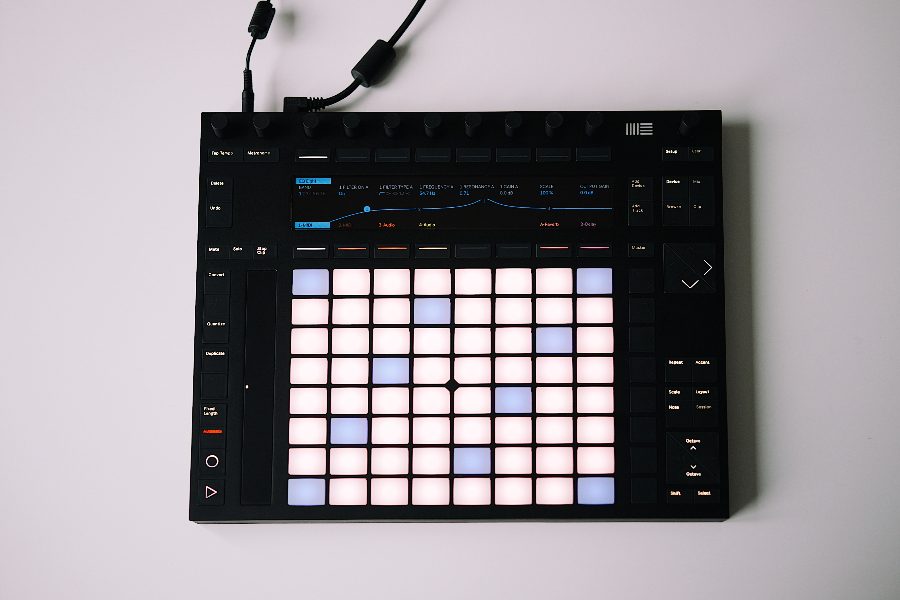
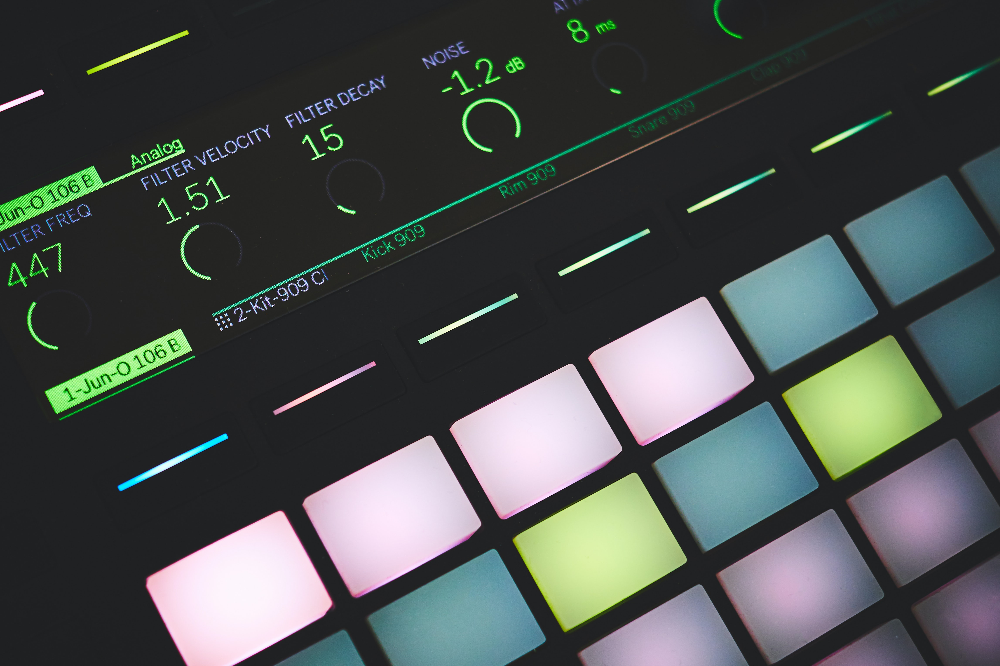

Ableton
We make Live, Push and Link — unique software and hardware for music creation and performance. With these products, our community of users creates amazing things.
Ableton was founded in 1999 and released the first version of Live in 2001. Our products are used by a community of dedicated musicians, sound designers, and artists from across the world.


Making music isn’t easy. It takes time, effort, and learning. But when you’re in the flow, it’s incredibly rewarding.
We feel the same way about making Ableton products. The driving force behind Ableton is our passion for what we make, and the people we make it for.
Why Ableton - Juanpe Bolivar
We are more than 350 people from 30 different countries divided between our headquarters in Berlin and our offices in Los Angeles and Tokyo.
Most of us are active musicians, producers, and DJs, and many of us use Live and Push every day. We come from a wide range of cultural and professional backgrounds. Some of us have PhDs, some are self-taught, and most of us are somewhere in between. What connects us is the shared belief that each of us has the skills and knowledge to contribute to something big: helping to shape the future of music culture.